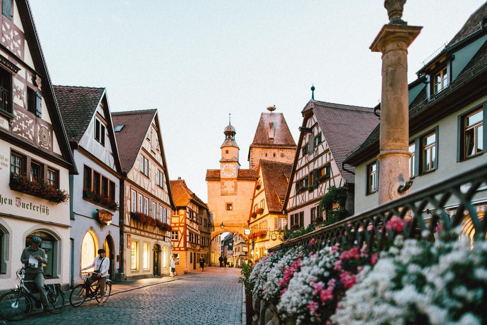

Ever since I was a young child I would read and watch all sorts of media regarding history, as a young boy I was always captivated by war and its part in history. Germany, being a large contributor in the two World Wars was prominently mentioned in the media I was consuming. As I grew older I gained a desire to visit places of historical value, Germany being one of such places. I would love to visit all the areas in which battles took place, take in the senerey that has both changed and not changed over the many years since.
For more information about Germany click here.
As an avid history nerd, Japan is a place with a rich history that would be wonderful to view in person. This place has countless beautiful seneries and the culture is so different from what we know here. They even have a cat island, who doesn't want to see a cat island! I have eated at numerous Japanese themed resturants and I have to say, the food is amazing. It would be a true delight to experience the thing in person.
For more information about Japan click here.
To start off, if anyone says they wouldn't want to visit the International Space Station (ISS) they are a liar. Everyone wants to visit this place, even if the thought of going into space scares them, that is a fact that I made up myself. When I was a kid I always wanted to be an astronaught, but then I grew up and realised that becoming one of those is a lot of work. So I decided to learn programming instead. Still cool in my eyes, but not astronaught cool... Space is the final frontier for us as humans, and I'll be damned if I don't get to visit it in our technologically advanced future!

For more information about the International Space Station click here.